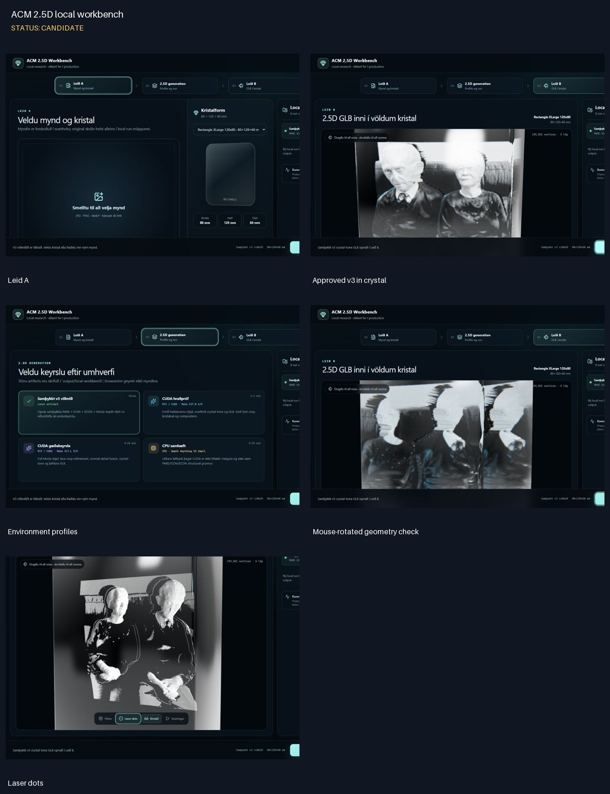
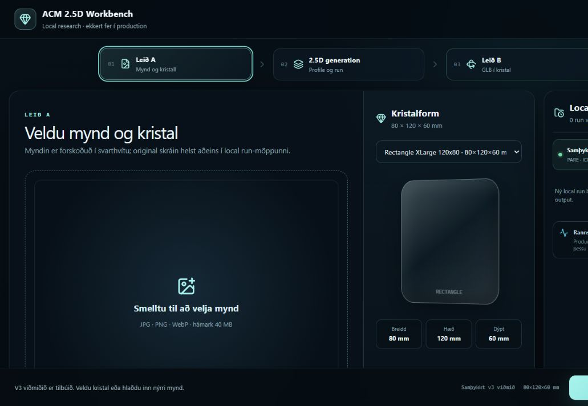
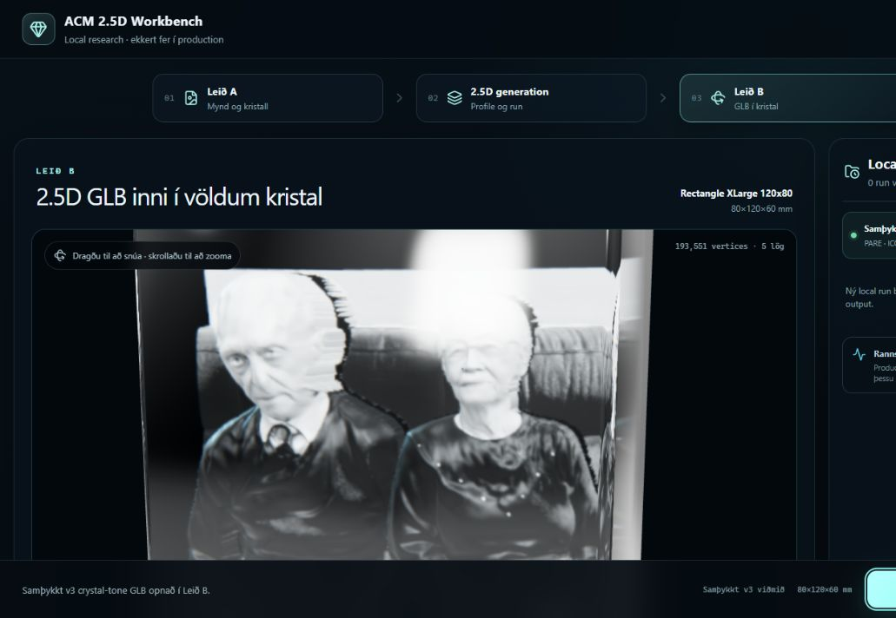
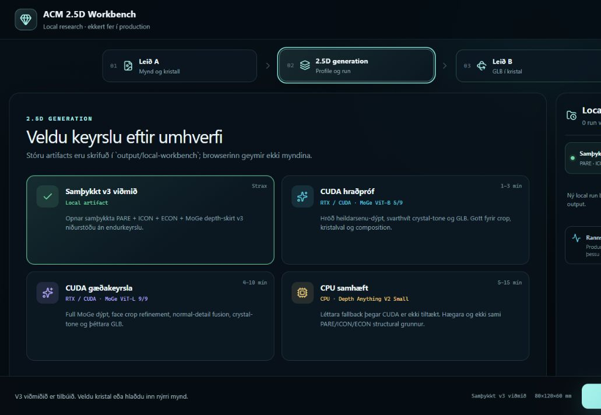
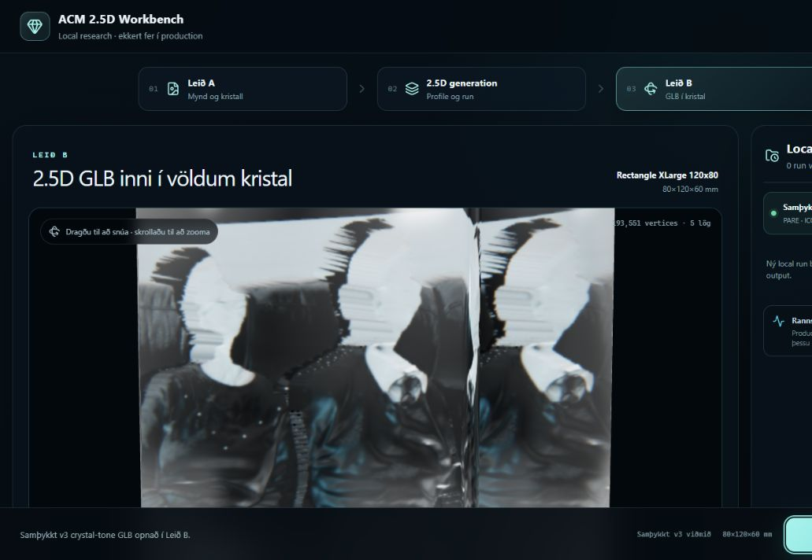
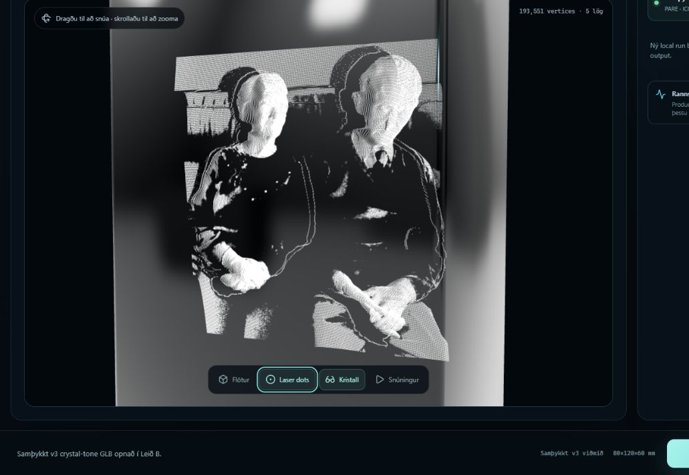

ACM 2.5D local workbench
Status: CANDIDATE
- Local-only workflow: Leid A to 2.5D generation to Leid B.
- Viewer loads the approved crystal-tone v3 GLB: 193,551 vertices across five layers.
- Fresh-browser console check returned zero errors or warnings after the clean restart.

Contact sheet
Leid A

Approved v3 in crystal

Environment profiles

Mouse-rotated geometry check

Laser dots